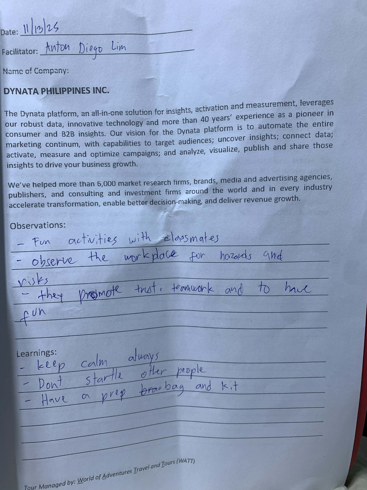
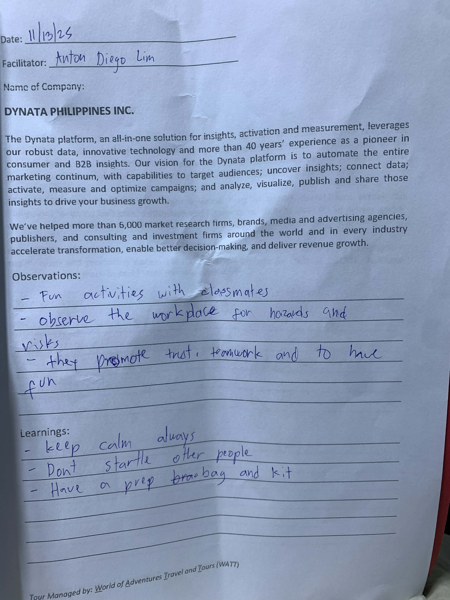

Journal Entries
UP CEBU INCUBATOR
Observation:
The UP Cebu Incubator for IT encourages start-ups to test their ideas early and refine them by talking directly to potential users and customers.
Learnings:
I learned that listening to user feedback from the beginning helps start-ups build solutions that truly match real needs.
 

DYNATA PHILIPPINES, INC.
Observation:
Dynata Philippines uses digital tools to gather survey responses quickly, allowing companies to understand customer behavior in real time.
Learnings:
I learned that fast and accurate data collection helps businesses make quicker decisions and adapt to customer trends more effectively.

RIVANIT CEBU
Observation:
RivanIT Cebu provides structured IT training programs that follow industry certification standards, giving learners clear guidelines on what skills to master.
Learnings:
I learned that having a structured path makes it easier to track progress and build confidence as I develop technical skills step by step.
MATA TECHNOLOGIES, INC.
Observation:
Mata Technologies creates digital experiences that combine creativity and technology, showing how visual design greatly enhances user engagement.
Learnings:
I learned that high-quality visuals and immersive interfaces can significantly improve how people interact with digital content.
T.a.R.S.I.E.R 117
Observation:
TaRSIER 117 works closely with local government units and emergency teams, ensuring that different responders are coordinated during emergencies.
Learnings:
I learned that strong coordination between agencies is essential for delivering fast, efficient, and organized emergency services.